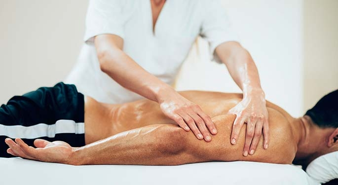

Fisioterapia Deportiva
Beneficios del Masaje Deportivo
- Reactiva la circulación sanguínea y linfática
- Alivia el dolor
- Relaja la musculatura
- Prepara el músculo para la actividad deportiva
-
Proporciona un estado de equilibrio emocional al paciente o atleta, ya
que disminuye la ansiedad mediante la relajación.
- Previene la aparición de lesiones
- Aumenta la temperatura muscular
- Proporciona sensación de bienestar
Aplicaciones del masaje deportivo
El masaje deportivo tiene cuatro etapas que se mencionaran a
continuación, cada una de ellas están orientadas a una misma finalidad
que es el mantenimiento optimo del estado físico del paciente, en este
caso del atleta. Pero a su vez están muy bien diferenciadas entre sí, ya
que se aplican diversas técnicas en las fases de la actividad deportiva
que corresponda.
